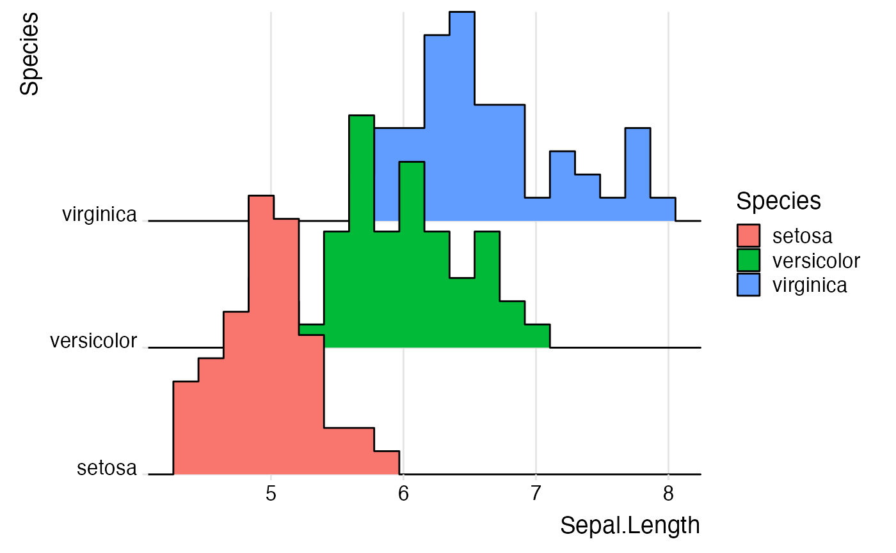
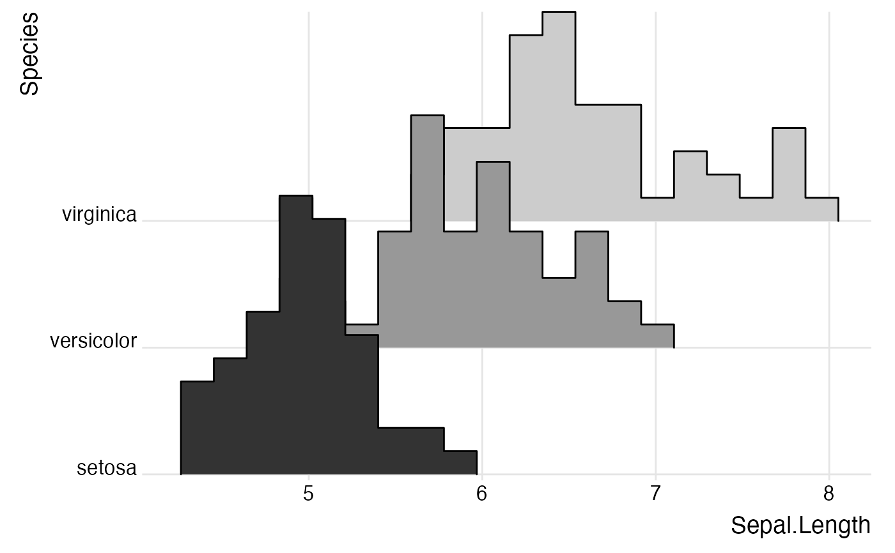
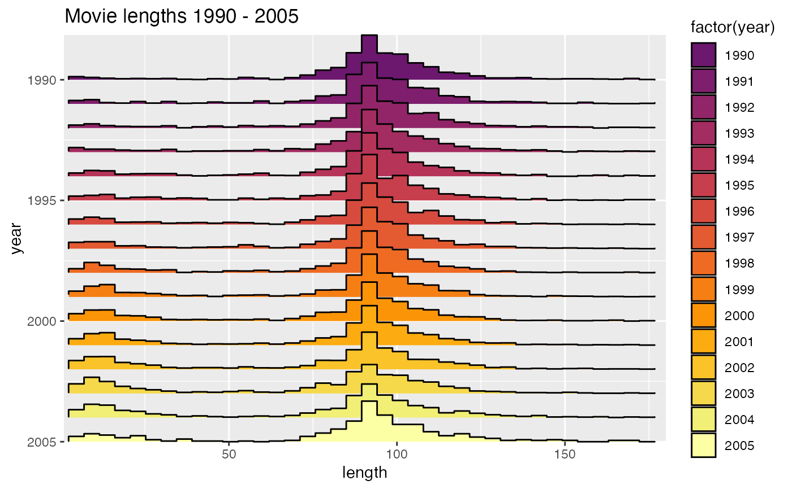
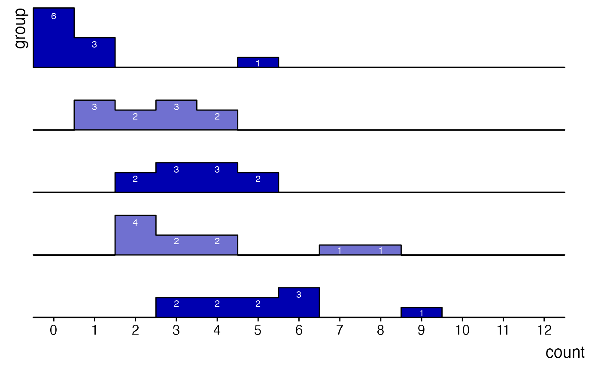

Works like stat_bin except that the output is a ridgeline describing the histogram rather than
a set of counts.
stat_binline(
mapping = NULL,
data = NULL,
geom = "density_ridges",
position = "identity",
...,
binwidth = NULL,
bins = NULL,
center = NULL,
boundary = NULL,
breaks = NULL,
closed = c("right", "left"),
pad = TRUE,
draw_baseline = TRUE,
na.rm = FALSE,
show.legend = NA,
inherit.aes = TRUE
)Set of aesthetic mappings created by aes() or
aes_(). If specified and inherit.aes = TRUE (the
default), it is combined with the default mapping at the top level of the
plot. You must supply mapping if there is no plot mapping.
The data to be displayed in this layer. There are three options:
If NULL, the default, the data is inherited from the plot
data as specified in the call to ggplot().
A data.frame, or other object, will override the plot
data. All objects will be fortified to produce a data frame. See
fortify() for which variables will be created.
A function will be called with a single argument,
the plot data. The return value must be a data.frame, and
will be used as the layer data. A function can be created
from a formula (e.g. ~ head(.x, 10)).
Position adjustment, either as a string, or the result of a call to a position adjustment function.
Other arguments passed on to layer(). These are
often aesthetics, used to set an aesthetic to a fixed value, like
colour = "red" or size = 3. They may also be parameters
to the paired geom/stat.
The width of the bins. Can be specified as a numeric value
or as a function that calculates width from unscaled x. Here, "unscaled x"
refers to the original x values in the data, before application of any
scale transformation. When specifying a function along with a grouping
structure, the function will be called once per group.
The default is to use the number of bins in bins,
covering the range of the data. You should always override
this value, exploring multiple widths to find the best to illustrate the
stories in your data.
The bin width of a date variable is the number of days in each time; the bin width of a time variable is the number of seconds.
Number of bins. Overridden by binwidth. Defaults to 30.
bin position specifiers. Only one, center or
boundary, may be specified for a single plot. center specifies the
center of one of the bins. boundary specifies the boundary between two
bins. Note that if either is above or below the range of the data, things
will be shifted by the appropriate integer multiple of binwidth.
For example, to center on integers use binwidth = 1 and center = 0, even
if 0 is outside the range of the data. Alternatively, this same alignment
can be specified with binwidth = 1 and boundary = 0.5, even if 0.5 is
outside the range of the data.
Alternatively, you can supply a numeric vector giving
the bin boundaries. Overrides binwidth, bins, center,
and boundary.
One of "right" or "left" indicating whether right
or left edges of bins are included in the bin.
If TRUE, adds empty bins at either end of x. This ensures that the binline always goes
back down to 0. Defaults to TRUE.
If FALSE, removes lines along 0 counts. Defaults to TRUE.
If FALSE, the default, missing values are removed with
a warning. If TRUE, missing values are silently removed.
logical. Should this layer be included in the legends?
NA, the default, includes if any aesthetics are mapped.
FALSE never includes, and TRUE always includes.
It can also be a named logical vector to finely select the aesthetics to
display.
If FALSE, overrides the default aesthetics,
rather than combining with them. This is most useful for helper functions
that define both data and aesthetics and shouldn't inherit behaviour from
the default plot specification, e.g. borders().
library(ggplot2)
ggplot(iris, aes(x = Sepal.Length, y = Species, group = Species, fill = Species)) +
geom_density_ridges(stat = "binline", bins = 20, scale = 2.2) +
scale_y_discrete(expand = c(0, 0)) +
scale_x_continuous(expand = c(0, 0)) +
coord_cartesian(clip = "off") +
theme_ridges()

ggplot(iris, aes(x = Sepal.Length, y = Species, group = Species, fill = Species)) +
stat_binline(bins = 20, scale = 2.2, draw_baseline = FALSE) +
scale_y_discrete(expand = c(0, 0)) +
scale_x_continuous(expand = c(0, 0)) +
scale_fill_grey() +
coord_cartesian(clip = "off") +
theme_ridges() +
theme(legend.position = 'none')

library(ggplot2movies)
ggplot(movies[movies$year>1989,], aes(x = length, y = year, fill = factor(year))) +
stat_binline(scale = 1.9, bins = 40) +
scale_x_continuous(limits = c(1, 180), expand = c(0, 0)) +
scale_y_reverse(expand = c(0, 0)) +
scale_fill_viridis_d(begin = 0.3, option = "B") +
coord_cartesian(clip = "off") +
labs(title = "Movie lengths 1990 - 2005") +
theme_ridges() +
theme(legend.position = "none")
#> Warning: Removed 118 rows containing non-finite values (stat_binline).

count_data <- data.frame(
group = rep(letters[1:5], each = 10),
mean = rep(1:5, each = 10)
)
count_data$group <- factor(count_data$group, levels = letters[5:1])
count_data$count <- rpois(nrow(count_data), count_data$mean)
ggplot(count_data, aes(x = count, y = group, group = group)) +
geom_density_ridges2(
stat = "binline",
aes(fill = group),
binwidth = 1,
scale = 0.95
) +
geom_text(
stat = "bin",
aes(y = group + 0.9*stat(count/max(count)),
label = ifelse(stat(count) > 0, stat(count), "")),
vjust = 1.2, size = 3, color = "white", binwidth = 1
) +
scale_x_continuous(breaks = c(0:12), limits = c(-.5, 13), expand = c(0, 0)) +
scale_y_discrete(expand = c(0, 0)) +
scale_fill_cyclical(values = c("#0000B0", "#7070D0")) +
guides(y = "none") +
coord_cartesian(clip = "off") +
theme_ridges(grid = FALSE)
